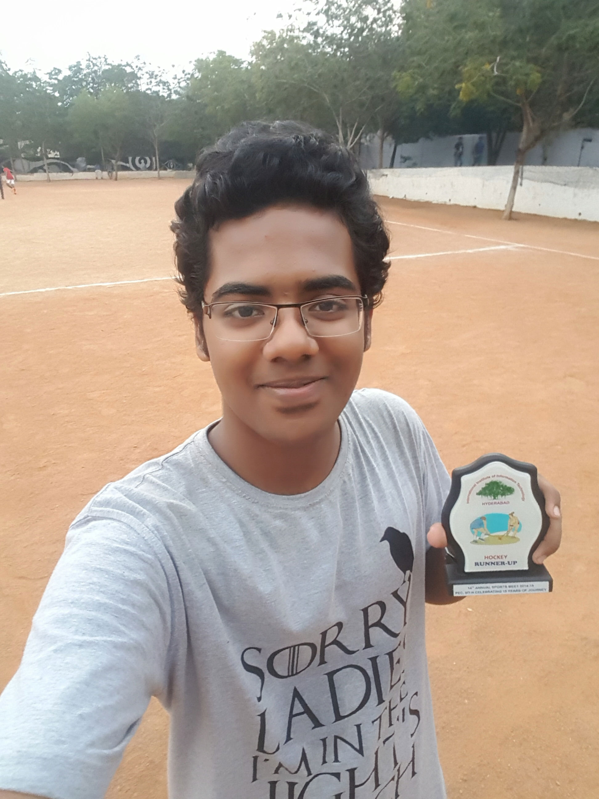

Let me begin with my love for listening to songs. Music soothes my mind and cheers me up even if I am in the most depressed of moods, while also helping me to focus if I am in the middle of any work. I listen to all kinds of music, irrespective of genre or even language. All that matters to me are the beats and the rhythm. I love listening to party songs, because it leaves me cruising with positive energy and lifts my mood tremendously. An all time favourite party song of mine is Watch Out For This. Here is the song for all those who love some really peppy beats:
I also enjoy slow songs during my private moments as it helps me introspect my life. It soothes me and brings out my soft nature. One such song that has touched me very much and managed to calm me tremendously is Count On Me by Bruno Mars. The audio as well as the video of the song are equally powerful, so I have attached the video as well:

Moving on to sports, I enjoy exerting myself in all kinds of outdoor activites, especially sports. I love playing a wide variety of sports including football, badminton, basketball, volleyball, cricket etc. Only recently did I discover the pleasure of playing hockey, when I took it up as a sport in our college. Believe me, playing the sport changed me as a person, and also gave me the rush of adrenaline to play more and more. Recently, our college had hosted the Hockey Premier League 2015, and our team finished third only to the coaches' teams. It was great moment of pride, playing our national sport, and winning all those matches. For the first time in my life, I learnt the importance of team spirit too. Although I have played a lot of sports during my high school days, nothing has given me the joy that hockey did.